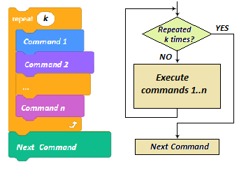

Përsëritja e hapave¶

Në shembujt e linjave të vizatimit të mësimit të mëparshëm, ne kemi përdorur urdhërat e përsëritjes për të marrë sprites tonë, duke lëvizur me stilolaps poshtë, për të tërhequr atë që donim, me më pak shkrime. Për shembull, në vend që të shtojmë 400 komanda për të vizatuar një vijë të pikuar që është e gjatë 400 piksele, shtuam vetëm pesë: katër që përsërisin një model, dhe e pesta që përcakton numrin e përsëritjeve të kërkuara.
Në këtë mësim, ne do t’i lidhim komandat e përsëritjes me komandat e lëvizjes dhe shikimit, në mënyrë që të krijojmë animacione të ndryshme. Për më tepër, ne do të prezantojmë një komandë e cila ju lejon të vendosni të dhëna hyrëse dhe blloqe që ruajnë vlerat e shprehjeve logjike.
Një nga shembujt më të thjeshtë të komandave të përsëritjes është komanda për përshkrimin e të ashtuquajturit “forever loop”. Komandat përsëritëse përbëjnë trupin e ciklit. Drejtimi i tyre mund të ndalet vetëm duke ndaluar programin.

Për shembull, nëse doni të arrini një iluzion që macja po ecën, balerina po vallëzon, dhe flutura po fluturon, gjithçka që duhet të bëni është të shtoni një skenar për ta që përsërit blloqet |next_costume | dhe |wait_sec| në një lak përgjithmonë.
Sigurisht, një sprite duhet të ketë të paktën dy kostume dhe periudha e pritjes duhet të jetë e shkurtër, për shembull, 2 të dhjetat e sekondës (0.2). Komanda e pritjes midis ndryshimeve të kostumit është e domosdoshme që të mund të vëzhgojmë ndryshimin e pamjes. Syri i njeriut nuk është në gjendje të regjistrojë ndryshimet me shpejtësinë që i bën kompjuteri. Kjo është arsyeja pse ne jemi duke “ndalur” pamjen e kostumit duke përdorur komandën e pritjes, derisa syri ynë të regjistrojë imazhin e mëparshëm.
Në shembujt e paraqitur në mësimin e mëparshëm kemi përdorur të ashtuquajturat “sythe numërimi”. Këto janë përsëritje që dinë paraprakisht se sa herë trupi i lakut do të ekzekutohet.
Në Scratch, ekziston gjithashtu një urdhër për të përshkruar një cikël kur numri i përsëritjeve nuk dihet paraprakisht, por varet nëse plotësohet kushti për daljen nga cikli.

Kushti për kalimin e komandave të trupit të ciklit (kushti për dalje), kontrollohet në fillim të çdo ciklit, kështu që ekziston mundësia që cikli mos të ekzekutohet as një herë, nëse përcaktohet se kushti është përmbushur gjatë parë kontrolloni.
Mund të ndodhë gjithashtu që cikli të vazhdojë të funksionojë pafundësisht nëse kushti për daljen nga lak nuk është përmbushur kurrë.
 Studioni shembujt e mëposhtëm¶
Studioni shembujt e mëposhtëm¶

Ne pamë që faza është e gjerë 480 piksele, e lartë 360 pixel dhe se çdo pikë në skenë mund të arrihet duke përdorur koordinatat e saj. Në shembujt e mëposhtëm do të krijojmë imazhe duke vulosur sprites tonë në vende të veçanta. Sigurisht, ne mund të vizatojmë format tona të spriteve duke përdorur redaktorin e bojës - për shembull, një rreth të kuq, ose një shesh blu, por meqenëse duam që imazhet të jenë sa më tërheqëse të jetë e mundur, ne do të përdorim sprite Star - një yll i verdhë nga libraria e sprites.
Për të rregulluar imazhet, ne do ta modifikojmë yllin pak. Madhësia origjinale e yllit është 47х48 piksele, të cilat mund të shohim nëse shkojmë në butonin Costums.
Ne kemi nevojë që madhësia e sprite të jetë 40x40, në atë mënyrë saktësisht 12 yje përshtaten në hapësirën midis majtë dhe skajit të djathtë të skenës (480: 40), dhe saktësisht 9 midis buzës së sipërme dhe të poshtme (360: 40). Për më tepër, ne dëshirojmë që sprite të mbushet në mënyrë të barabartë me një ngjyrë dhe të mos ketë një vijë kontur.

Si të editojmë sprites
 Ne përdorim
Ne përdorim  mjet për të zgjedhur tërë sprite
mjet për të zgjedhur tërë sprite
 Hiq vijën e konturit (vendos trashësinë e rreshtit në 0)
Hiq vijën e konturit (vendos trashësinë e rreshtit në 0)
 Ne zgjedhim yllin e brendshëm dhe e fshijmë
Ne zgjedhim yllin e brendshëm dhe e fshijmë
 Ne zgjedhim tërë sprite dhe vendosim madhësinë në 40х40.
Ne zgjedhim tërë sprite dhe vendosim madhësinë në 40х40.
Ky yll i përshtatur do të jetë i vetmi sprite i përdorur në shembujt e mëposhtëm.
Shembulli i mëposhtëm ilustron se si stacking unazore të shumta mund të përdoren për ndërtimin e sytheve komplekse. Ajo gjithashtu tregon se si përdorimi i mjeteve të redaktorit të bojës së integruar në modalitetin vektor mund të përdoret për të redaktuar sprites. Vetë projekti përbëhet nga disa detyra të thjeshta.
Shembulli 1 - Projekti “Yje”¶

Detyra 1
Shkruaj një program i cili do të tërheqë 4 yje krah për krah, nga e majta në skajin e djathtë të skenës, të gjithë duhet të jenë me ngjyra të ndryshme dhe madhësia e tyre duhet të jetë 120 piksele. Vizatimi duhet të bëhet duke përdorur komandën  .
.
Rezultati i dëshiruar i përfundimit të detyrës mund të shihet në Figurën 1.
Ky rezultat mund të arrihet duke përfunduar hapat e mëposhtëm:
.. hlist::
:columns: 2
* |1| ne zmadhojmë sprite 300% kështu që tani ylli ka dimensionet 120х120,
* ne e pozicionojmë sprite në mënyrë që ana e majtë e yllit të jetë e drejtë pranë skajit të majtë të fazës: х = -180,
* ne lëmë një pullë,
* ne e lëvizim sprite gjerësinë e saj në të djathtë (120 hapa),
*  ne ndryshojmë ngjyrën e sprite (duke përdorur komandën e efektit të ngjyrës së ndryshimit),
*
ne ndryshojmë ngjyrën e sprite (duke përdorur komandën e efektit të ngjyrës së ndryshimit),
*  ne lëmë një pullë,
*
ne lëmë një pullë,
*  ne e lëvizim sprite gjerësinë e saj në të djathtë (120 hapa),
*
ne e lëvizim sprite gjerësinë e saj në të djathtë (120 hapa),
*  ne ndryshojmë ngjyrën e sprite (duke përdorur komandën e efektit të ngjyrës së ndryshimit),
*
ne ndryshojmë ngjyrën e sprite (duke përdorur komandën e efektit të ngjyrës së ndryshimit),
*  ne lëmë një pullë,
*
ne lëmë një pullë,
*  ne e lëvizim sprite gjerësinë e saj në të djathtë (120 hapa),
*
ne e lëvizim sprite gjerësinë e saj në të djathtë (120 hapa),
*  ne ndryshojmë ngjyrën e sprite (duke përdorur komandën e efektit të ngjyrës së ndryshimit),
*
ne ndryshojmë ngjyrën e sprite (duke përdorur komandën e efektit të ngjyrës së ndryshimit),
*  ne lëmë një pullë.
ne lëmë një pullë.
Mund të shohim që i përsërisëm hapat 4-6 tri herë. Mund të kishim bërë të njëjtën gjë me më pak shkrime, siç ilustron figura e mëposhtme.

Blloku
nga grupi Control na lejon të grumbullojmë skenarin e kërkuar vetëm një herë dhe të vendosim sa herë duhet të përsëritet.
Ky bllok është një shembull i të ashtuquajturave C-blocks, forma e të cilit na kujton shkronjën C. Thërrima brenda një blloku C merr një skenar si një fushë hyrëse. Prandaj, ky bllok ka dy fusha hyrëse: njëra për numrin e përsëritjeve dhe tjetra për skenarin.

Detyra 2
Shkruaj një program i cili do të tërheqë 12 yje krah për krah, nga e majta në skajin e djathtë të skenës, siç tregohet në figurën 2, madhësia e yjeve duhet të jetë 40x40.
Kjo detyrë do të jetë e ngjashme me atë të mëparshme, por ne nuk kemi nevojë të ndryshojmë dimensionet e sprite. Së pari, ne duhet ta vendosim sprite-in tonë në pozicionin x = -220, y = 0, dhe më pas ta vulosim atë. Pas kësaj, ne duhet të përsërisim hapat 4-6 nga detyra e mëparshme 11 herë, me ndryshimin se ne do të lëviznim sprite 40 në vend të 120 hapave. Sa kohë do të duhej për të shkruar këtë program të thjeshtë pa përdorur komandën për përsëritje?
Zgjidhja e detyrës është dhënë në figurën e mëposhtme.


Shkruaj një program i cili do të vizatojë 15 yje me ngjyra të ndryshme njëra mbi tjetrën në qendër të skenës, madhësia e yllit të parë duhet të jetë 320x320 (800% më e madhe se origjinali), dhe secila pas kësaj duhet të jetë më e vogël nga 50, siç është paraqitur në figurën 3.
Sidoqoftë, kur themi më të vogël për 50, nënkuptojmë 750%, 700% … më të mëdha se origjinale (dhe jo 50 pixel më të vegjël, ose 50% të 800%). Për të shmangur përzierjen e imazhit të ri me atë të bërë gjatë ekzekutimit të mëparshëm, duhet të shtojmë komandën erase në fillim.
Zgjidhja e detyrës është dhënë në figurën e mëposhtme.


Detyra 4
Shkruani një program që do të vizatojë një kornizë rreth skenës së përbërë nga yje me ngjyra të ndryshme, siç shihet në Figurën 4.
Ne mund të krijojmë një zgjidhje duke lidhur zgjidhje për 4 probleme më të thjeshta.
1. Vizatimi i yjeve përgjatë skajit të sipërm të skenës majtas djathtas. 2. Vizatimi i yjeve përgjatë skajit të djathtë të skenës nga lart poshtë. 3. Vizatimi i yjeve përgjatë skajit të poshtëm të skenës djathtas majtas. 4. Vizatimi i yjeve përgjatë skajit të majtë të skenës në krye.
Problemi i parë u zgjidh në Detyrën 2. E vetmja gjë që duhet të bëni është të ndryshoni vlerat të cilat përcaktojnë pozicionin fillestar të yllit, në vend të у = 0 të vendosni = 160. Problemi i dytë mund të zgjidhet lehtësisht duke ndryshuar orientimin e rrjedhës, në vend që të zhvendoset në të djathtë ai duhet të lëvizë poshtë. Blloqet për lëvizjen, ndryshimin e ngjyrës dhe vulosjen duhet të përsëriten 8 herë. Problemi i tretë dhe i katërt mund të zgjidhen në mënyrë të ngjashme, ju vetëm duhet të ndryshoni orientimin e sprite dhe sa herë duhet të lërë një pullë. Zgjidhja për të gjithë detyrën, si dhe pjesët që tregojnë zgjidhjen për problemin e tretë dhe të katërt, janë dhënë në figurën më poshtë.

{kind=link}
Struktura e zgjidhjes për këtë detyrë, ku sythe të shumta janë të lidhura së bashku, quhet përbërje lineare.

Detyra 5
Shkruaj një program i cili do të tërheqë 4 yje krah për krah, nga e majta në skajin e djathtë të skenës, madhësia e yllit duhet të jetë 120 piksele. Do yll duhet të jetë i përbërë nga yje të shumfishtë të madhësive dhe ngjyrave të ndryshme, si yll nga Detyra 3.
Rezultati duhet të duket në figurën 5.
Zgjidhja për këtë detyrë ka një strukturë komplekse. Do të na duhet të fusim formën e ciklit te Detyra 3, e cila vulos yje më të vegjël në krye të atyre më të mëdhenjve, në cikël që duhet të përsëritet 4 herë, i cili tërheq yje të mëdhenj krah për krah, si në Detyrën 1. Zgjidhja e plotë është paraqitur në figura e mëposhtme.
{kind=link}
Struktura e zgjidhjes për këtë detyrë, ku një cikël është futur në një tjetër, quhet një përbërje fole.
Shembulli 2 - Projekti “Format gjeometrike”¶
Në këtë projekt, ne do të tregojmë se si mund të vizatojmë forma të rregullta gjeometrike - trekëndësha, sheshe, pentagona dhe gjashtëkëndëshe.
Shumëkëndëshat e rregullt kanë anët që janë të gjitha kënde të barabarta dhe të brendshme të gjitha janë të barabarta. Do t’i vizatojmë poligonet duke filluar nga lart në qendër të ekranit, me anët që janë të gjata 100 pixel.
Le të fillojmë duke vizatuar një shesh. Ne do ta dërgojmë stilolapsin në qendër të ekranit, në pozicionin (0,0), atëherë do ta vendosim stilolapsën dhe do t’i përsërisim urdhrat e mëposhtëm 4 herë: lëvizni 100 hapa, kthejeni 90 gradë.
Nëse e dimë që shuma e të gjitha këndeve të jashtme të një poligoni të rregullt është 360: sup: о (shiko figurën më poshtë), ne lehtë mund të grumbullojmë blloqe komanduese të cilat do të tërheqin trekëndësha, pentagona dhe gjashtëkëndëshe.
{kind=link}
Pjesët e shkrimeve të përdorura për vizatimin e poligoneve të përmendur janë paraqitur në figurën e mëposhtme.

Shënim. Ju gjithashtu mund të përdorni komandën kthesë majtas dhe të përpiqeni të vizatoni një shesh ose një gjashtëkëndësh në pozicionin e paraqitur në foton më lart.
Si në shembullin e mëparshëm, duke klikuar mbi flamurin e gjelbër fshin gjithçka që më parë ishte në skenë, vendos vlera për ngjyrën dhe madhësinë e lapsit dhe jep udhëzime se si të përdorësh projektin.
Meqenëse duam të mbajmë udhëzimet në skenë, do të hartojmë një sfond që ka udhëzimet e shkruara në të, duke përdorur redaktorin e bojës së integruar. Pamja e fazës pas ekzekutimit të programit është përshkruar në figurën e mëposhtme.

Scriptdo skript i lidhur me çelësat 3-6 në tastierë do të fshijë të gjitha shenjat e bëra më parë, do të fshehë sprite dhe pastaj do të vizatojë poligonin përkatës.
Në figurën e mëposhtme, ju mund të shihni skriptet për fillimin e programit dhe vizatimin e një trekëndëshi dhe një sheshi.

Përditësimi i Projektit
Ne do të përmirësojmë projektin në mënyrë që ai të tërheq një formë gjeometrike të dhënë nga përdoruesi me të dhënat e hyrjes. Në këtë version të projektit, parametrat e vizatimit përcaktohen duke klikuar mbi flamurin e gjelbër. Pastaj përdoruesit i kërkohet të shtypë numrin e anëve të poligonit që ai / ajo dëshiron të vizatojë.
Blloku i të dhënave hyrëse  ndodhet në grupin *Sensing .
ndodhet në grupin *Sensing .
Pas ekzekutimit të kësaj komande, Scratch kujton atë që përdoruesi vendosi në hapësirën e quajtur
Pritet që përdoruesi të shkruajë një nga numrat midis 3 dhe 6, megjithatë, nëse përdoruesi fut një numër i cili nuk është në këtë interval, programi nuk do të funksionojë siç duhet, dhe kjo duhet të parandalohet.
Një nga mënyrat për të kontrolluar të dhënat e hyrjes është të përsërisni pyetjen derisa përdoruesi të fusë një numër nga intervali i saktë.

Pasi të jenë marrë të dhënat e sakta të hyrjes, do të përdoren për të llogaritur numrin e përsëritjeve dhe këndin e kthesës, prandaj, të katër poligonët mund të vizatohen me të njëjtat komanda.

Ne do të përdorim pjesë të projekteve të mëparshme për projektin tonë të ardhshëm. Në të, ne do të tregojmë se si mund të përdorim përbërjen e foleve të sytheve të numërimit për të tërhequr imazhe efektive të prodhuara duke përsëritur modele. Modeli mund të përsëritet pas një numri të caktuar hapash - në atë mënyrë do të marrim të ashtuquajturat skajet dekorative. Modelet mund të përsëriten pas kthimit për të krijuar një kënd ose pas kombinimit të të dy lëvizjeve.
Shembulli 3 - Projekti “Ornamente”¶
Nëse e përsërisim lakin e numërimit që tërheq një pentagon të rregullt nga shembulli i mëparshëm shumë herë, do të vizatojmë një zbukurim - një imazh më i ndërlikuar i përbërë nga pentagona. Për shembull, nëse vizatojmë 20 pentagona të tilla, duke lëvizur nga e majta në skajin e djathtë të skenës, do të tërheqim kufirin e mëposhtëm dekorativ.

Vizatimi i pentagonit mundësohet nga cikli (2), i cili është futur në lakin e jashtëm (1). Cikli i jashtëm përsëritet 20 herë. Sa herë që Cikli i jashtëm vrapon, një pentagon tërhiqet në pozicionin aktual të lapsit, pas së cilës sprite lëviz në të djathtë me stilolaps lart (3). Sprite lëviz vetëm gjysmën e gjatësisë së anës së pentagonit, kjo është arsyeja pse pentagonët mbivendosen.
Sidoqoftë, nëse përsërisim vizatimin e pentagonave ndërsa ndryshojmë drejtimin e sprite para se të vizatojmë secilën pentagon, kështu që sprite kthehet në një rreth të plotë, do të marrim stolinë e mëposhtme.

Meqenëse një rreth i plotë ka 360 gradë, dhe sprite kthehet 15 gradë pas secilës pentagon (2) me stilolaps lart (3), duhet ta përsërisim këtë procedurë 24 herë; prandaj, cikli i jashtëm (1) përsëritet 24 herë. Nëse midis vizatimeve, sprite ndryshon një kënd dhe gjithashtu lëviz 10 hapa, do të marrim një zbukurim pak më të ndryshëm.

Nëse e përsërisim zbukurimin e dytë 4 herë, duke shkuar nga e majta në skajin e djathtë të skenës, do të marrim imazhin më poshtë.

Prandaj, vizatimi i kufirit të fundit dekorativ arrihet me përbërjen e mbivendosur i cili ka 3 sythe: cikli i brendshëm tërheq një pentagon (3), cikli i mesëm (2) përsërit vizatimin e pentagonit dhe e kthen spërkatjen me stilolaps lart 24 herë, dhe cikli i jashtëm (1) përsërit vizatimin e stoli rrethore dhe e zhvendos sprite me stilolaps lart për vlerën e diametrit të stolive.
Ky projekt na lejon të vizatojmë secilën prej zbukurimeve duke shtypur një nga çelësat 1-4 në tastierë. Përveç këtyre 4 skripteteve, ekziston një skenar i cili nxitet duke klikuar mbi flamurin e gjelbër, dhe një i cili nxitet me udhëzimin mesazh. Udhëzimi mesazhi transmetohet nga secila skenar në fund të procesit të drejtimit. Kur sprite merr këtë mesazh, ai shfaqet afër pjesës së sipërme të ekranit dhe jep udhëzimin për vizatimin e stolive.

 E kuptuat?¶
E kuptuat?¶
Pyetja 1¶
- po
- jo
- Saktë.
Q-55: A është gjendja që lejon daljen nga një cikël i quajtur trupi i ciklit?
Pyetja 2¶
- po
- Saktë.
- jo
Q-56: A është ndalja e programit mënyra e vetme për të ndaluar funksionimin e forever loop?
Pyetja 3¶
- po
- jo
- Saktë.
Q-57: A e di paraprakisht komanda repeat until Sa herë trupi i ciklit do të përsëritet??
Pyetja 4¶
Q-58: Cila nga këto cikle forever lejon që sprite të lëvizë majtas-djathtas dhe të duket djathtas, nëse  ,
,  dhe
dhe  komandat ishin ekzekutuar më parë? (Zgjidhni të gjitha përgjigjet e sakta).
komandat ishin ekzekutuar më parë? (Zgjidhni të gjitha përgjigjet e sakta).

Pyetja 5¶
Q-59: Cila nga këto sythe përgjithmonë lejon që sprite të ndryshojë vazhdimisht midis dy pozicioneve: këmbët lart dhe këmbët poshtë, nëse , dhe  komandat ishin ekzekutuar më parë? (Zgjidhni të gjitha përgjigjet e sakta).
komandat ishin ekzekutuar më parë? (Zgjidhni të gjitha përgjigjet e sakta).

Pyetja 6¶
Q-60: Cila nga këto cikle numërimi lejon që Sprite të bëjë 80 hapa? (Zgjidhni të gjitha përgjigjet e sakta).

Pyetja 7¶
Q-61: Cila nga këto cikle numërimi lejon që Sprite të bëjë 80 hapa? (Zgjidhni të gjitha përgjigjet e sakta).

Pyetja 8¶

- Hello END
- Gërvishtja nuk bën një dallim midis shkronjave të mëdha dhe të vogla, prandaj, kushti për daljen nga cikli është përmbushur.
- What's your name
- Ai është mesazhi për të hyrë dhe për të mos dalë.
- Goodbye
- Saktë.
Q-62: Çfarë do të thotë sprite nëse përgjigja e përdoruesit në pyetjen What’s your name është END?
Pyetja 9¶
- A
- Saktë.
- B
- Ky është kushti për të hyrë në cikël në këtë pirg të komandave.
- të dy
- Është kushti për daljen nga cikli në (A) është, në të njëjtën kohë, kushti për hyrjen në cikli në (B).
- asnjë
- Stack (А) lejon që Sprite të thotë Hello në kushtet e dhëna.
Q-63: Cila nga këto rafte do të lejojë që Sprite të thotë Hello nëse përdoruesi fut vlerën 0?

- asnjëherë
- Kushti për daljen nga cikli nuk u plotësua për 3 përgjigjet e para
- 2 herë
- Kushti për të dalë nga cikli nuk u plotësua as për numrin 3.
- 3 herë
- Saktë.
- 4 herë
- Kur plotësohet kushti për daljen nga cikli, komandat nga trupi i lakut nuk ekzekutohen.
Q-64: Sa herë do të funksionojë trupi i ciklit (А), nëse përdoruesi fut përgjigjet e pyetjes sipas rendit vijues: 1, 2, 3, 0.
Pyetje 10¶

- Saktë.
- Për shembull, do të pranojë 7 si një hyrje të saktë.
- Për shembull, nuk do të pranojë 3 si një hyrje të saktë.
Q-65: Cila shkronjë shënon gjendjen që do të bëjë të mundur kontrollin e të dhënave të shkruara të jenë të sakta?
 Provoje!¶
Provoje!¶
Ushtrimi 1¶
Gjerdan e hapur. Krijoni një projekt i cili tregon një varg qarqesh me ngjyra dhe madhësi të ndryshme duke filluar nga buza e majtë e skenës.

Udhëzim:
Imazhi arrihet duke ndryshuar ngjyrën e lapsit dhe duke e vendosur poshtë, madhësia e stilolapsit duhet të jetë 80, sprite që e mban atë duhet të fshihet, dhe pozicioni i saj fillestar duhet të jetë (-200,0). Cikli duhet të përsëritet 5 herë, dhe në të sprite duhet të lëvizë 80 hapa me stilolapsin lart, dhe të rritet numri i ngjyrës së stilolapsit me 30, dhe pastaj ta vendosë lapsin poshtë. Vlera fillestare e ngjyrës së stilolapsit duhet të jetë 0. Ju duhet të rregulloni që vizatimi i mëparshëm të fshihet kur të klikohet flamuri jeshil.
Ushtrimi 2¶
Gjerdan i Mbyllur. Krijoni një projekt i cili tërheq një sekuencë të mbyllur me 12 qarqe me ngjyra të ndryshme. Madhësia e lapsit duhet të jetë 50.

Udhëzim:
Imazhi arrihet duke ndryshuar ngjyrën e lapsit dhe duke e vendosur poshtë, madhësia e stilolapsit duhet të jetë 50, sprite që e mban atë duhet të fshihet, dhe pozicioni i saj fillestar duhet të jetë (-50,50). Cikli duhet të përsëritet 12 herë, dhe në të sprite duhet të lëvizë 50 hapa me stilolaps lart, të kthehet 30 gradë dhe të rritet numri i ngjyrës së stilolapsit me 15, dhe pastaj ta vendosë lapsin poshtë për të lënë një shenjë. Vlera fillestare e ngjyrës së stilolapsit duhet të jetë 0. Ju duhet të rregulloni që vizatimi i mëparshëm të fshihet kur të klikohet flamuri jeshil.
Ushtrimi 3¶
Seritë e qarqeve. Krijoni një projekt i cili tregon një seri qarqesh me ngjyra dhe madhësi të ndryshme, duke filluar nga skaji i majtë i skenës.

Udhëzim:
Imazhi arrihet duke ndryshuar madhësinë dhe ngjyrën e lapsit dhe duke e vendosur poshtë, sprite që mban stilolapsin duhet të fshihet, dhe pozicioni i saj fillestar duhet të jetë (-200,0). Vlera fillestare për ngjyrën e stilolapsit duhet të jetë 0 dhe për madhësinë e lapsit 80. Cikli duhet të përsëritet 5 herë, dhe në të numri i ngjyrës së stilolapsit duhet të rritet për 30, dhe madhësia e lapsit duhet të zvogëlohet me 10. Sprite duhet të lëvizë 80 hapa në të djathtë, me stilolaps lart, natyrisht. Komanda wait gjithashtu duhet të shtohet në cikël, kështu që ju mund ta ndiqni procesin më lehtë. Ju duhet të rregulloni që vizatimi i mëparshëm të fshihet kur të klikohet flamuri i gjelbër.
Ushtrimi 4¶
Rrethet koncentrike. Krijoni një projekt i cili tregon një seri qarqesh koncentrike me ngjyra të ndryshme në qendër të skenës.

Udhëzim:
Imazhi arrihet me ndryshimin e madhësisë dhe ngjyrës së lapsit dhe vendosjen e tij, sprite që e mban atë duhet të fshihet dhe ajo duhet të vendoset në qendër të skenës. Cikli duhet të përsëritet 8 herë, dhe në të numri i ngjyrës së stilolapsit duhet të rritet me 25 dhe madhësia e lapsit të zvogëlohet për 30. Vlera fillestare për ngjyrën e lapsit duhet të jetë 0 (e kuqe), dhe për madhësia 240 (madhësia më e madhe). Komanda wait gjithashtu duhet të shtohet në cikli, kështu që ju mund ta ndiqni procesin më lehtë. Pena duhet të ulet pas çdo ndryshimi. Ju duhet të rregulloni që vizatimi i mëparshëm të fshihet kur të klikohet flamuri i gjelbër.
 Debug!¶
Debug!¶
Bug 1¶
Nxënësi dëshironte që sprite të shëtiste midis majës dhe skajit të djathtë të skenës. Kjo është arsyeja pse ai / ajo shtoi ndryshimin e vazhdueshëm të kostumit dhe lëviz 10 hapa deri sa të arrijë në skaj, kur kthehet sprite. Sidoqoftë, nxënësit nuk i pëlqen fakti që sprite është duke ecur kokëposhtë drejt skajit të majtë të skenës. Çfarë duhet të bëhet për të rregulluar këtë gabim?

Përgjigja:
Kjo mund të rregullohet duke shtuar bllokun në skenarin e sprite.
Bug 2¶
Nxënësi dëshironte që fluturën e tij të fluturonte, e cila ka dy kostume - një me ngritje dhe një me krahë të ulur, të rrëshqasë duke tundur krahët mes dy pozicioneve të rastit. Sidoqoftë, programi i tij nuk e mundësoi këtë. Flutura u rrëshqit në mes të dy pozicioneve, por krahët e saj ishin ulur ose ngritur. Ku gaboi nxënësi?

Përgjigja:
Duhej të ishin krijuar dy skenare, të cilat do të funksiononin paralelisht.

 Përmbledhje¶
Përmbledhje¶
Në këtë mësim, ne kemi mbuluar komandat për përsëritje. Me shembuj të projekteve të ndryshme kemi ilustruar se si të përdorim secilën nga tre llojet e sytheve: forever loop, coun loop - ku ne e dimë paraprakisht numrin e përsëritjeve, dhe ciklin e gjendjes - ku një model do të përsëritet derisa të ketë një gjendje të caktuar është përmbushur. Ne gjithashtu treguam se dy ose më shumë sythe mund të kombinohen për të ekzekutuar njëra pas tjetrës (përbërja lineare), ose njëra mund të futet në tjetrën (përbërja e folesë). Për më tepër, mësuam si të përdorim komandën e futjes së të dhënave.
Projekte Scratch: 5Studio
Koncepte të reja: loop, loop body, the exit condition, forever loop, counting loop, condition loop, linear composition of loops, nested loop composition, data input command.
Koamnda Scratch:  -
-  , ,
, ,  ;
;  - ;
- ;
 - , ;
- , ;  -
-  , ,
, ,  .
.
 Krijoni projekte¶
Krijoni projekte¶
Projekti 1 - “Hexagon”¶
Krijoni një projekt i cili do të tërheqë një gjashtëkëndësh; gjatësia e anëve duhet të gjenerohet në mënyrë të rastësishme nga intervali [100,200].
Projekti 2 - “Katror딶
Krijoni një projekt i cili ofron për të vizatuar një katror, faqet e të cilit janë paralele me boshtet e koordinatave, ose formoni një kënd prej 45: sup: о me boshtet e koordinatave. Përzgjedhja duhet të bëhet me tastin 1 ose 2 në tastierë. Udhëzimi se si të përdoret programi duhet të shkruhet në sfondin e skenës, si në shembullin 2. Gjatësia e brinjës duhet të jetë 100 pixel.
Projekti 3 - “trekëndësha”¶
Shkruaj një projekt i cili ofron për të tërhequr llojet e mëposhtme të trekëndëshave:
а) barabrinj, b) izosceles, c) drejt, d) akute, e) i mpirë.
Projekti duhet të ketë një udhëzim, i cili tregon se cili çelës nxit vizatimin e llojit të trekëndëshit.
Planifikoni koordinatat për secilin trekëndësh, dhe pastaj vizatoni anët me komandën glide.
Projekti 4 - “Shumëkëndëshat”¶
Shkruaj një projekt i cili ofron për të tërhequr llojet e mëposhtme të katërkëndëshave:
nje katror, b) drejtkëndësh, c) romb, d) paralelogram, e) trapezoid.
Planifikoni vizatimin, kështu që të gjitha katërkëndëshat e përmendura më lart janë tërhequr në skenë në fund të procesit të drejtimit.
Udhëzimi për përdorimin e programit duhet të shfaqet në skenën kur klikohet flamuri i gjelbër.
Ngjarjet që shkaktojnë vizatimin e llojeve të veçanta të katërkëndëshave duhet të shoqërohen me çelësat e tastierës sipas dëshirës tuaj.
Shënim. “Quadrilaterals” janë mësuar në kurrikulën e matematikës për klasën e gjashtë.